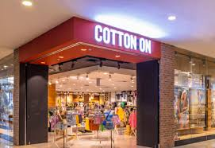
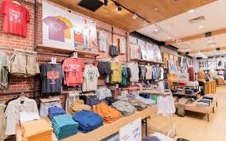

Picture this: It’s 1988 and our first ‘shop’ is the boot of a Ford Bronco parked at The Beckley Market in Geelong, Australia. Inside? A stack of denim jackets. It was the start of something big. Growing up in a beachside town in Australia, our founder started Cotton On with an epic vision: he wanted to take effortless Aussie fashion to the world and do Good along the way. The first Cotton On store opened in 1991, giving us the kick-start we needed to fulfil our purpose to make a positive difference in people’s lives. By the early 2000s, we were a staple in Aussie wardrobes, the go-to for effortless casual fashion. Our Aussie spirit means we don’t take ourselves too seriously. We go about things boldly and differently, and we’re OK with that. We believe some of the best plans are made over beers in the backyard. And so beers were had and plans were made. Today, we have 8 brands across 22 countries and 1,500 stores. Powered by 20,000 team members, who together with our customers, are making a positive impact through one life-changing Foundation.
Trading hours
- Mon-Fri : 08:00 - 19:00
- Sat : 07:00 - 20:00
- Sun : 09:00 - 18:00